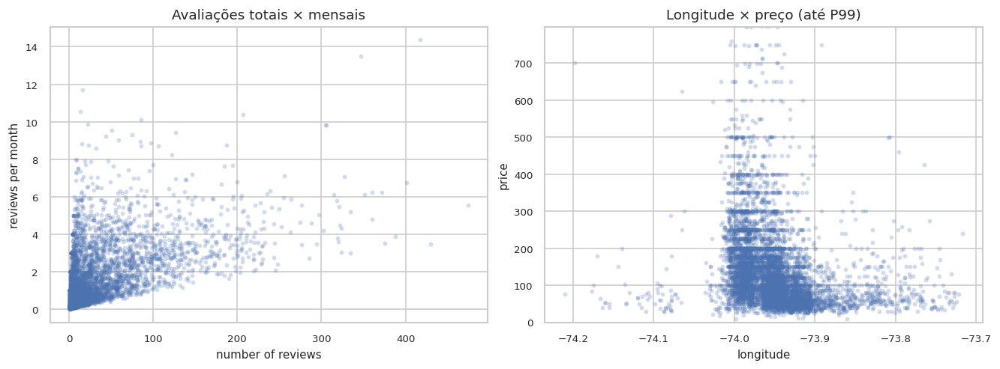

Geografia, acomodação e bairro são categóricas; latitude, longitude, reviews, disponibilidade e noites mínimas são numéricas.
Exploratory data analysis · Machine learning
O que revela o preço de uma estadia em New York City?
Uma investigação do mercado Airbnb de 2019 em Nova York, indo da qualidade dos dados às decisões de pré-processamento necessárias para construir um pipeline de regressão confiável.
Manhattan
Brooklyn
Queens
01
02
03
N ↑
48.895anúncios analisados
16colunas originais
11preços zero removidos
2019ano de referência
01 / Leitura da base
Antes de modelar, entender o que existe.
O dataset descreve anúncios de Airbnb em Nova York, combinando
localização, tipo de acomodação, disponibilidade, histórico de
avaliações e informações do anfitrião. O alvo escolhido para a etapa
preditiva é price, o preço anunciado por noite em
dólares.
Nem toda coluna numérica deve ser tratada como medida. id
e host_id são identificadores: entram no arquivo como
números, mas não representam intensidade, quantidade ou ordem. Por
isso, foram excluídos das estatísticas descritivas, correlações e do
pipeline de modelagem.
Qualidade dos dados
As ausências relevantes aparecem em last_review e
reviews_per_month: são 10.052 nulos na base original e
10.051 após remover preços inválidos. Como esses nulos coincidem com
anúncios sem avaliações, eles carregam informação de negócio, não
apenas falha de coleta. Já os 11 registros com price = 0
foram tratados como inconsistência do alvo, porque uma diária
comercial gratuita distorceria o treinamento e as métricas de erro.
A coluna last_review possui 1.764 datas distintas, de
2011-03-28 a 2019-07-08, mas foi deixada fora do pipeline porque
exigiria engenharia temporal específica.
| Coluna | Tipo conceitual | Papel na análise |
|---|---|---|
id | Identificador | Chave única do anúncio. Usada para auditoria de duplicidade, não como variável preditiva. |
name | Texto livre | Título do anúncio. Pode conter sinal textual, mas foi descartado nesta versão para evitar NLP fora do escopo. |
host_id | Identificador | Identifica o anfitrião. Não é escala numérica; o sinal de múltiplos anúncios é capturado por outra coluna. |
host_name | Texto / identificação | Nome do anfitrião. Possui poucos ausentes e não deve ser usado diretamente por baixa generalização. |
neighbourhood_group | Categórica nominal | Borough de Nova York. Mantida por ser uma dimensão forte de localização. |
neighbourhood | Categórica nominal | Bairro específico. Mantida com agrupamento de categorias raras para reduzir esparsidade. |
latitude | Numérica geográfica | Coordenada espacial. Mantida e padronizada; não recebeu transformação logarítmica. |
longitude | Numérica geográfica | Coordenada espacial. Mantida e padronizada; ajuda a capturar localização fina. |
room_type | Categórica nominal | Tipo de acomodação. Mantida porque há diferença clara de preço mediano entre grupos. |
price | Numérica contínua | Alvo da regressão. Registros com preço zero foram removidos como inconsistência. |
minimum_nights | Numérica discreta | Regra mínima de estadia. Tem cauda longa e recebe log1p no pipeline. |
number_of_reviews | Numérica discreta | Total de avaliações. Representa histórico de atividade e recebe log1p. |
last_review | Data armazenada como texto | Data da avaliação mais recente. Foi analisada, mas não entrou no pipeline final nesta versão. |
reviews_per_month | Numérica contínua | Média mensal de reviews. Ausência indica anúncio sem avaliações; imputação escolhida: zero. |
calculated_host_listings_count | Numérica discreta | Número de anúncios do anfitrião. Aproxima profissionalização do host e recebe log1p. |
availability_365 | Numérica discreta | Dias disponíveis no ano. Mantida como sinal de disponibilidade/oferta e padronizada. |
Ausências relevantes
| Coluna | Ausentes | % | Decisão |
|---|---|---|---|
last_review | 10.052 | 20,56% | analisar, mas não modelar nesta versão |
reviews_per_month | 10.052 | 20,56% | imputar zero |
host_name | 21 | 0,04% | descartar |
name | 16 | 0,03% | descartar |
Inconsistências e extremos
| Critério | Resultado | Tratamento |
|---|---|---|
price = 0 | 11 registros | remoção antes do split |
minimum_nights > 365 | 14 registros | manter com log1p |
| IDs duplicados | 0 | sem deduplicação |
| Coordenadas fora de NYC | 0 | sem correção espacial |
Não existe classe-alvo por ser regressão, mas Manhattan e Brooklyn somam cerca de 85% da base válida.
O split foi estratificado por decis de preço para preservar a cauda do alvo em treino e teste.
02 / Distribuições
A média conta uma história. A mediana conta outra.
| Variável | Média | Mediana | Desvio |
|---|---|---|---|
| latitude | 40,73 | 40,72 | 0,05 |
| longitude | -73,95 | -73,96 | 0,05 |
| price | 152,76 | 106,00 | 240,17 |
| minimum_nights | 7,03 | 3,00 | 20,51 |
| number_of_reviews | 23,27 | 5,00 | 44,55 |
| reviews_per_month | 1,37 | 0,72 | 1,68 |
| calculated_host_listings_count | 7,14 | 1,00 | 32,96 |
| availability_365 | 112,78 | 45,00 | 131,63 |
Resumo das variáveis numéricas, após remover apenas preços iguais a zero. id e host_id foram excluídos por serem identificadores.
A distância entre média e mediana mostra a assimetria da base. Em
price, poucos anúncios muito caros elevam a média para
US$ 152,76, enquanto o anúncio típico fica mais próximo da mediana
de US$ 106. A mesma lógica aparece em minimum_nights e
number_of_reviews, indicando caudas longas em regras
de estadia e popularidade dos anúncios.
Por isso, a análise privilegia medianas para comparar grupos e usa limites de eixo apenas para leitura visual. Os extremos continuam presentes nas estatísticas e informam a escolha posterior de transformação logarítmica, em vez de exclusão automática.


Entire home/apt representa 51,97% dos anúncios válidos, Private room 45,65% e Shared room 2,37%.
Manhattan concentra 44,31% da base válida e Brooklyn 41,11%; Queens, Bronx e Staten Island ficam bem menores.
A mediana global é US$ 106, menor que a média de US$ 152,76, evidenciando a influência de anúncios caros.
minimum_nights chega a 1.250 e price a US$ 10.000; extremos são sinalizados, não apagados em massa.
03 / Relações entre variáveis
O preço se organiza em camadas.
As correlações lineares com price são fracas: nenhuma
variável numérica isolada explica bem o preço. Isso é esperado em um
mercado de hospedagem, onde localização, privacidade, disponibilidade
e dinâmica de demanda se combinam de forma não linear.
A relação numérica mais evidente ocorre entre
number_of_reviews e reviews_per_month, pois
ambas medem atividade de avaliações. Já a associação entre
calculated_host_listings_count e
availability_365 sugere um possível padrão de anfitriões
mais profissionais, com múltiplos anúncios e maior disponibilidade.
Quando o preço é analisado por categorias, os padrões ficam mais
claros. Entire home/apt apresenta mediana maior que
Private room, o que faz sentido pela maior privacidade e
espaço. Manhattan também lidera entre os boroughs, provavelmente
refletindo centralidade, demanda turística e características não
observadas no dataset.




Categorias × preço
A mediana de Entire home/apt é US$ 160, contra US$ 70 em
Private room e US$ 45 em Shared room.
Entre boroughs, Manhattan tem mediana de US$ 150, Brooklyn US$ 90,
Queens e Staten Island US$ 75, e Bronx US$ 65. Essas diferenças são
fortes o bastante para justificar encoding categórico no pipeline.
Numéricas × categóricas
Os boxplots mostram sobreposição entre grupos, mas também diferenças na dispersão. Isso indica que as categorias ajudam a organizar o problema, embora não determinem sozinhas o preço. Para a modelagem, essa leitura justifica manter variáveis categóricas relevantes e evitar interpretações causais simplistas.
04 / Preparação para modelagem
Decisões guiadas pelo comportamento dos dados.
Imputação com significado
reviews_per_month recebe zero porque a ausência representa anúncios sem avaliações. As demais numéricas usam mediana para reduzir sensibilidade a caudas longas; categóricas usam moda.
Transformar, não apagar
Preços iguais a zero são removidos como erro do alvo. Os 14 casos com minimum_nights > 365 são mantidos: podem ser erro, mas também contratos longos; por isso entram com log1p.
Categorias sob controle
Borough, bairro e tipo de quarto usam one-hot encoding. Bairros raros são agrupados com min_frequency=20, reduzindo esparsidade e instabilidade.
Escalas comparáveis
StandardScaler é aplicado depois de imputação e log1p. Isso torna variáveis como longitude, disponibilidade e contagens comparáveis para modelos futuros.
reviews_per_month
imputação zero → log1p → StandardScaler
minimum_nights · number_of_reviews · host_listings
mediana → log1p → StandardScaler
latitude · longitude · availability_365
mediana → StandardScaler
borough · neighbourhood · room_type
moda → OneHotEncoder com min_frequency=20

Pipeline verificado
39.107 × 139treino processado 9.777 × 139teste processado 100%valores finitos
O PCA foi usado como ferramenta exploratória, não como etapa automática
do pré-processador final. O PC1 explica 28,7% da variância e é
dominado por reviews_per_month e
number_of_reviews, funcionando como um eixo de atividade
de avaliações. O PC2 explica 22,9% e é puxado por
availability_365 e
calculated_host_listings_count, sugerindo um eixo de
disponibilidade e profissionalização do anfitrião. Como dois
componentes preservam apenas 51,5% da variância e não separam
claramente faixas de preço, o pipeline final mantém as variáveis
transformadas em vez de substituir tudo por PCA.
Síntese
O que fica para a modelagem.
O preço dos anúncios é assimétrico e depende de combinações entre geografia, tipo de acomodação e contexto do anúncio. As variáveis numéricas isoladas têm baixa correlação linear com o alvo, mas ainda carregam sinais úteis quando combinadas com categorias e transformações adequadas.
O resultado é um pipeline reprodutível, com separação treino/teste antes de qualquer ajuste, imputação coerente com o significado dos dados, tratamento conservador de extremos e encoding preparado para categorias novas. A próxima etapa natural é conectar esse pré-processador a modelos de regressão e avaliar erro em dólares.